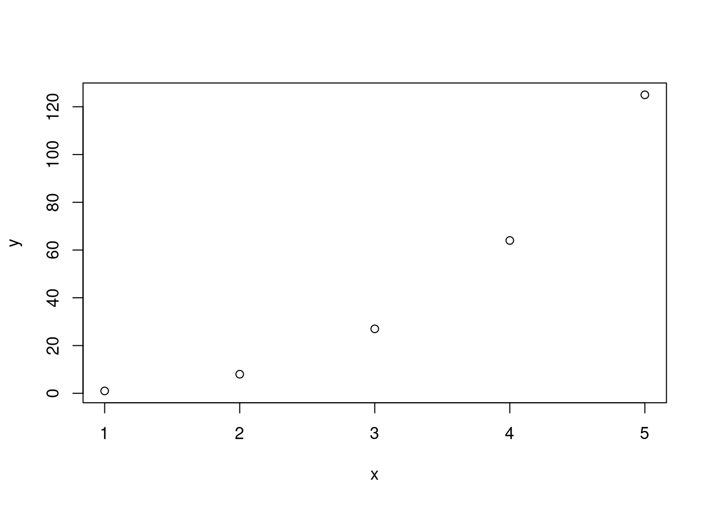

---
title: "Meu projeto"
author: "Eu"
date: "today" # há diversas customizações para data
format: html # ou pdf, docx, epub
editor: source # ou visual
number-sections: true # níveis para o índice automático
number-depth: 3
lang: pt # linguagem para os textos automáticos (ex: Sumário)
bibliography: referencias.bib # arquivo texto a ser criado
csl: universidade-federal-de-alfenas-abnt-autor-data.csl # estilo de formatação bibliográfica
toc: true # inserção de Sumário (ou "Table of Contents")
linestretch: 1.5 # espacejamento entre linhas
fontsize: 12pt # tamanho da fonte
papersize: a4 # dimensão de saída (papel)
abstract: "esse é o resumo" # resumo do trabalho1 Criação do projeto pelo RStudio
- Clique em File (ou em sua tradução para Português, dependendo da instalação do programa);
- Selecione na sequência, New File, Quarto document;
1.1 Compilando o projeto
Para visualizar o documento do projeto em formato específico (HTML, PDF, DOCX), compile o documento; alternativamente:
- Clicando o atalho, Ctrl + Shift + K (K de knitr, a máquina por traz do algoritmo…ou vice-versa);
- Clicando em File, Render Document;
- Clicando no ícone de uma seta azul seguido de Render, abaixo do menu principal.
1.2 Cabeçalho
O cabeçalho de um documento dinâmico nada mais é que uma sequência de informações para sua formatação, tais como título, fonte, autor, data, arquivo e estilo de referências, entre outros. Segue um exemplo de cabeçalho para uso em um documento. Basta substituir o conteúdo daquele que foi gerado pelo Rstudio:
Vale ressaltar a importância da linguagem do texto. Se não for inserida a linha lang: pt, o texto terá alguns termos em inglês, como padrão, tais como Figure, Table, Table of Contents; ao invés de Figura, Tabela, Sumário.
1.3 Compilando o documento
Para visualizar o documento do projeto em formato específico (HTML, PDF, DOCX), compile o documento; alternativamente:
- Clicando-se o atalho, Ctrl + Shift + K (K de knitr, a máquina por traz do algoritmo…ou vice-versa);
- Clicando-se em File, Render Document;
- Clicando-se no ícone de uma seta azul seguido de Render, abaixo do menu principal.
1.4 Referências bibliográficas
O pacote quartodo R em que estamos exercendo a criação do documento dinâmico, permite a inserção de citações ao longo do texto e geração automática de bibliografia formatada ao final deste.
- Crie um documento de texto vazio e salve-o com atributo “.bib” na pasta de seu trabalho (ex: referencias.bib);
- Vá ao Google Acadêmico e selecione uma referência;
- Clique em Citar e escolha a opção BibTex;
- Copie o texto gerado, cole-o no arquivo .bib criado, e salve-o (ex: referencias.bib);
- Coloque o arquivo de estilos de referências na pasta do trabalho (universidade-federal-de-alfenas-abnt-autor-data.csl; pode-se escolher qualquer outro se o objetivo for um periódico específico; para isso, consulte os disponíveis no repositório CSL do Zotero;
- Ao final do documento coloque um subtítulo para a bibliografia, tal como:
# Referências {#unnumbered}Pronto ! Agora o arquivo BibTex está pronto para a inserção de citações Para tal, insira no local em que se deseja a citação o símbolo seguido do identificador BibTex*, logo à direita do tipo de publicação. Veja o exemplo abaixo:
@article{knuth1984literate, # knuth1984literate é o identificador
title={Literate programming},
author={Knuth, Donald Ervin},
journal={The computer journal},
volume={27},
number={2},
pages={97--111},
year={1984},
publisher={Oxford University Press}
}Para citar a referência, algo como:
…a programação letrada avaliada por Knuth (1984) tem sido considerada…
Referências múltiplas são citadas entre […], e com “;” entre cada uma.
1.5 Texto formatado
1.5.1 Subtítulos
Subtítulos são inseridos automaticamente em sequência numérica e com fontes estilizadas (negrito) de tamanhos distintos. São alocados simplesmente por número de hashtags inseridos antes. Existem 6 níveis (ex: 1.2, 2.4.1, etc), e que são indexados por #, ##, ###, ####, #####, ######.
Desejando-se que a numeração não apareça no subtítulo, ou que não seja listada no sumário inicial (quando a opção de docuemnto é livro; TOC (Table of Contents), bastas os comandos:
## subtítulo {.unnumbered} # não aparece no título
## subtítulo {.unlisted .unnumbered} # não é listada no TOC (Sumário)Para referenciar um subtópico, exemplifica-se:
## Capítulo 1 {#sec-capUm}
... e no texto..."...pode ser relembrado pela leitura do @sec-capUm"Testando o trecho acima:
1.5.1.1 Seção 1
“…pode ser relembrado pela leitura da Seção 1.5.1.1”
1.5.2 Comentários
É sempre desejável conhecer o significado de um conjunto de comandos, ou a essência de uma solução para um problema, uma lista de afazeres (ToDo), um trecho que se está experimentando, ou que foi colado de outra fonte para observação, ou qualquer informação que não se deseja visualizar no documento final, ou em preparação.
A inserção de comentários dá-se pelo atalho Shift + Ctrl + C, ao iniciar uma linha (pra um subtítulo, por ex), ao final dessa (pra uma explicação sobre o código), ou para um trecho selecionado. Para desfazer o comentário, basta repetir o atalho.
Se preferir introduzir o comentário de forma direta, digite:
<!---comentário--->1.5.3 Texto estilizado
Usando-se a linguagem Rmarkdown do RStudio é possível estabelecer com facilidade termos em negrito, itálico, etc, tal como segue:
*itálico* # itálico
**negrito** # negrito
~~cortado~~ # cortado
***itálico&negrito*** # itálico e negrito
^2^ # superescrito
*** # linha horizontal1.5.4 Listas
Listas podem apresentar-se com ou sem numeração. Para as últimas, ítens e subítens podem explicitar-se como segue:
* item 1
* item 2
+ subitem 1
+ subitem 2O resultado do trecho acima fica:
- item 1
- item 2
- subitem 1
- subitem 2
Já para uma lista numerada pode-se espelhar o exemplo acima. Pode-se elaborá-la enumerando-se manualmente ou, de forma mais prática, automaticamente, nesse caso bastando-se inserir “1.” para todos os ítens da lista.
1. item 1
1. item 2
+ subitem 1
+ subitem 2O resultado ficará como:
- item 1
- item 2
- subitem 1
- subitem 2
1.5.5 Cores
Se desejar alterar a cor de um texto, tente, por exemplo:
Se documento em HTML:
...conforme listado no <span style="color: red;">Anexo 2</span>
Se documento em PDF:
...conforme listado no \textcolor{red}{Anexo 2}Teste o trecho acima com saída em HTML ou PDF
1.6 Elementos Visuais
O ecossistema do R possui diversos pacotes para a criação de gráficos, tabelas, animações, simulações, diagramas, fluxogramas, etc. Contudo, dado o objetivo deste texto, são elencados na sequências os elementos visuais mais simples para inserção em um documento dinâmico pelo R.
1.6.1 Imagens
O modo mais simples para inserção de uma figura é realizado com o símbolo de interrogação ! seguido por sua legenda entre ” [ ] “, e que pode ser exemplificado como:
{#fig-figura1}
... e para citar...
" A figura @fig-figura1 apresenta os dados de..."
Obs: o arquivo da imagem tem que estar no mesmo diretório do projeto1.6.2 Equações
Equações podem ser inseridas em um ambiente próprio, ou de forma mais simples, diretamente no documento. Um exemplo de inserção direta de equação:
A equação quadrática encontrada foi $y = a*x^{2}/sqrt(x)$.O exemplo acima será compilado como:
…A equação quadrática encontrada foi \(y = a*x^{2}/\sqrt(x)\).
Se desejar a inserção de equações mais complexas, ou com referenciação no texto, deve-se proceder a inserção dessas em um ambiente próprio. Exemplificando:
$$
y = \frace{a}{b}+x^2/(sin(c)
$$ {#eq-equacao1}
... Segundo a #eq-equacao1 acima...Assim, o trecho acima ficará como:
\[ y = \frac{a}{b}+x^2*\sqrt{(sin(c))} \tag{1.1}\]
… Segundo a Equação 1.1 acima…
Vale também ressaltar que a linguagem Rmarkdown utilizada pelo pacote Quarto utiliza a sintaxe de código LaTex para equações. Se quiser algums comandos adicionais experimente esta fonte da Rice University (Houston, TX).
1.6.3 Tabelas
Assim como equações, tabelas podem ser criadas e formatadas a partir de diversos pacotes do R. Pela simplicidade buscada nesse texto, contudo, optou-se por uma inserção e referenciação mais simples, exemplificada abaixo:
| A tabela abaixo descreve os tratamentos:
| controle | tratam. A | tratam. B |
|----------|-----------|-----------|
| A | B | C |
| E | F | G |
| A | G | G |
: Tratamentos A e B em relação ao grupo controle {#tbl-tabela1}
...e para referenciá-la...
Observe que a @tbl-tabela1 traz os resultados de ....Pela formatação acima, o trecho ficará como:
A tabela abaixo descreve os tratamentos:
| controle | tratam. A | tratam. B |
|---|---|---|
| A | B | C |
| E | F | G |
| A | G | G |
…e para referenciá-la…
Observe que a Tabela 1.1 traz os resultados de ….
1.7 Trechos de códigos (chunks)
A alma da programação letrada (literate programming; (knuth84?)) consiste em unir em um mesmo documento texto estilizado e linguagem de programação. À esta última cabe a inserção de chunks ou trechos de códigos (algoritmo) que são compilados pelo R.
Para inserir um chunk duas opções simples:
- Por atalho: Ctrl + Alt + I ;
- Por digitação: insere-se uma tripla crase, * ```*, tanto pra abrir o trecho, como para fechá-lo, seguido de chaves, como segue.
```{ } # inserção de *chunk*
linhas de comando1.7.1 Opções de chunk
As opções de trechos de códigos (chunks) permitem que se visualize ou não as linhas, ou que se execute ou não os códigos (TRUE ou FALSE), e diversas outras. Exemplificando:
1.7.2 Inserindo um script do R num chunk
É possível também alocar as linhas de comando para um cálculo, gráfico, ou análise, em um chunk, como segue.
x <- 1:5
y <- x^3
plot(x,y)O resultado ficará como:

1.7.3 Inserção inline de equações e resultados
Os resultados obtidos a partir de uma análise de dados pode ser alocado após a compilação de um chunk. Por vezes, porém, é interessante alocar esse resultado na própria linha de texto, espelhando o que ocorre manualmente com editores de texto comuns.
Essa situação, em que se aloca um conteúdo de um chunk não no próprio, mas numa sequência textual, é denominada por inserção em linha de informações. As principais inserções em linha constituem equações rápidas ou resultados de análises computacionais.
A inserção em linha é efetuada alocando-se o conteúdo dentro da sintaxe ” r “, como segue:
a=7
b=5...a equação deverá resultar numa relação tal que `r a^2+b` seja o resultado da expressão... A expressão acima tem por resultado:
“A equação deverá resultar numa relação tal que 74 seja o resultado da expressão…”
Knuth, Donald Ervin. 1984. «Literate programming». The computer journal 27 (2): 97–111.